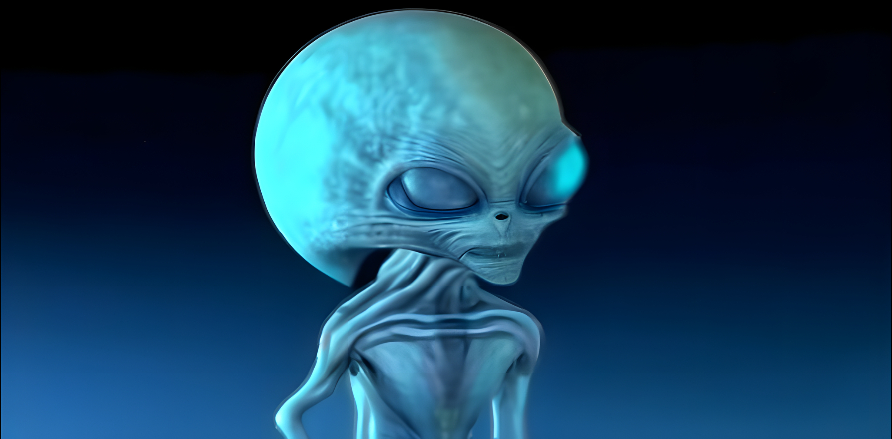

Троянские спутники Нептуна — это тела, которые вращаются вокруг Солнца вблизи одной из стабильных лагранжевых точек Нептуна, подобно троянским спутникам других планет. Поэтому они имеют примерно такой же период обращения, как и Нептун, и следуют примерно по той же орбите. В настоящее время известенизвестно 31 троянец Нептуна, из которых 27 вращаются вокруг точки Лагранжа L4 системы Солнце — Нептун на 60 впереди Нептуна, а четыре вращаются вокруг точки L5 системы Солнце — Нептун на 60 позади Нептуна. Троянцы Нептуна называются «троянцами» по аналогии с троянцами Юпитера.
Открытие 2005 TN53 на орбите с большим наклоном (более 25) было важным, поскольку указывало на «плотное» облако троянских астероидов (троянские астероиды Юпитера имеют наклон до 40), что свидетельствует о захвате при столкновении, а не о формировании на месте или в результате столкновения.. Предполагается, что крупные (радиус 100 км) Троянцевтроянцы Нептуна можетмогут быть больше, чем троянцевтроянцы Юпитера на порядок величины.
Открытие 2005 TN53 на орбите с большим наклоном (более 25) было важным, поскольку указывало на «плотное» облако троянских астероидов (троянские астероиды Юпитера имеют наклон до 40), что свидетельствует о захвате при столкновении, а не о формировании на месте или в результате столкновения.. Предполагается, что крупные (радиус 100 км) Троянцевтроянцы Нептуна можетмогут быть больше, чем троянцевтроянцы Юпитера на порядок величины.
Это пока все, что известно о пришельцев на Нептуне.
Марс усыпан инопланетными объектами искусственного происхождения: Ученые составили карту всего, что удалось разглядеть
Под инопланетными объектами в NASA подразумевают, конечно, те, которые в разное время были доставлены земными аппаратами. А что? На Марс они и в самом деле попали с другой планеты. Земля ведь другая планета. Профессор Кагри Килич (Cagri Kilic) - специалист аэрокосмической отрасли из Университета Западной Вирджинии (West Virginia University) подсчитал: за 50 с небольшим лет на Марсе накопилось 7110 килограммов разнообразного мусора. Это обломки разбившихся аппаратов, парашюты, тепловые защиты исследовательских зондов, совершивших мягкую посадку, сами аппараты, отслужившие свой срок, марсоходы, буровые инструменты, детали, отвалившиеся от аппаратов. «Сбор металлолома» начался с советского аппарата Марс-2, который первым достиг поверхности Красной планеты в мае 1973 года. Последним превратился в инопланетный мусор марсианский вертолет (Ingenuity Mars Helicopter) – сломался, совершив огромное количество вылетов, благодаря которым было определено местоположение некоторых объектов.Инопланетяне — это гипотетические существа, которые могут существовать за пределами Земли. Многие ученые и исследователи ищут признаки жизни на других планетах и лунах, ведь возможность существования внеземных цивилизаций вызывает большой интерес. В популярной культуре инопланетяне часто изображаются как разумные или разумные существа с необычной внешностью. Однако до сих пор научных доказательств их существования нет. В будущем, возможно, мы узнаем больше о тайнах космоса и о том, есть ли жизнь за пределами нашей планеты.
Марс: Исследования показывают наличие воды в прошлом и настоящем в виде льда и соленых растворов. В 2020 году ученые обнаружили подземный озерный слой под южным полюсом Марса, что увеличивает шансы на существование микробной жизни. Однако пока не найдено прямых доказательств существования инопланетных существ.
Нептун: Этот газовый гигант и его спутники — очень холодные и экстремальные условия. На данный момент нет данных о наличии жизни или инопланетян на Нептуне или его лунах. Однако ученые изучают его спутники, такие как Тритон, чтобы понять возможные условия для жизни в подобных средах.
Обнаружение экстремофильных организмов на Земле
1.На нашей планете найдены микроорганизмы, способные выживать в экстремальных условиях — в горячих источниках, глубинах океана, в условиях сильной радиации. Это свидетельствует о том, что жизнь может существовать в самых разнообразных условиях, что расширяет возможности поиска внеземной жизни.
2. Экзопланеты и их обитаемость
Астрономы обнаружили тысячи экзопланет за пределами Солнечной системы. Некоторые из них находятся в так называемой "зоне обитания" — области, где возможна наличие жидкой воды. Это увеличивает шансы существования жизни за пределами Земли.
3. Уфологические явления и неопознанные летающие объекты (НЛО)
Множество сообщений о наблюдениях НЛО остаются необъясненными. Некоторые из них были подтверждены военными и правительственными структурами, что вызывает интерес к возможной внеземной природе этих явлений.
Гипотезы о существовании инопланетян
1. Картина "Золотого миллиарда" и гипотеза о контакте
Некоторые ученые предполагают, что разумные инопланетяне могли уже установить контакт с Землей, но по разным причинам скрывают это. Эта гипотеза основывается на анализе аномальных явлений и сообщений.
2. Теория "Фермы Дрейка"
Эта гипотеза оценивает вероятность существования разумных цивилизаций во Вселенной. Уравнение Ферма позволяет оценить количество технологически развитых цивилизаций, существующих в нашей галактике.
3. Параллельные миры и гипотеза мультиверса
Некоторые теории предполагают существование
Приблизительное фото как они выглядят 